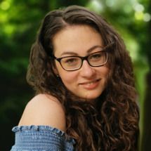

Niečo o nás
Projekt založili dve mamy - Terézia Miháliková (na foto vľavo) a Patrícia Hirschnerová (vpravo).
Stretli sa v máji 2019. Z ich rozhovoru pri káve je v súčastnosti tím 6 ľudí a ďalších príležitostných dobrovoľníkov.

Projekt založili dve mamy - Terézia Miháliková (na foto vľavo) a Patrícia Hirschnerová (vpravo).
Stretli sa v máji 2019. Z ich rozhovoru pri káve je v súčastnosti tím 6 ľudí a ďalších príležitostných dobrovoľníkov.

Pomáhame vytvárať pracoviská, kde kvalitní zamestnanci dosahujú pracovné výsledky v súlade s ich rodinným životom.
Spájame talentované ženy po kariérnej pauze a zamestnávateľov, ktorí si uvedomujú dôležitosť rovnováhy medzi prácou a rodinou.
Úspešné príklady zo Slovenska aj zahraničia ukazujú, že sa to dá.

LOREMIPSUM (TODO) a mama 2 pod 2. Absolventka Nexteria Leadership Academy, ktorej misiou je stavať mosty. Rola matky jej neodobrala chuť pracovať a keď si uvedomila, že má v okolí veľmi šikovné ženy mysliace rovnako, začala zisťovať, ako prinášať hodnotu aj mimo zaužívaných štandardov v zamestnaneckom pomere. V Pracujúcich mamách zastreľuje všetko, čo sa týka firiem. Fascinuje ju interiérový dizajn a kyslá káva.
patricia.hirschnerova@pracujucemamy.sk
HR špecialistka a mama 2 dievčat. Projekt založila, pretože verí, že v zahraničí
bežný job-sharing či flexibilný pracovný čas môže fungovať aj u nás. Typické pre ňu je, že hľadá na
veciach to pozitívne a svoju víziu, že je možné byť mamou a odborníčkou zároveň, vnáša do celého
projektu. Má za sebou reťazovú materskú a rozumie mamám, ktoré sa vracajú späť do práce. Jej
špecialitou je ich vzdelávanie.
terezia.mihalikova@pracujucemamy.sk
Zuzkinou doménou je digitálny marketing, UX a CX. Tieto oblasti zastrešuje aj v Pracujúce mamy. Neváhajte sa na ňu obrátiť, ak máte záujem s Pracujúce mamy nadvizať marketingovú spoluprácu.
zuzana.pokrivcakova@pracujucemamy.sk

Projektová a relokačná manažérka, momentálne však "pracujúca mama" neustále hľadajúca rovnováhu medzi rolou mamy a ženy plniacej si svoje pracovné i osobné vízie. Po dlhoročnom študijno-pracovnom pobyte v zahraničí sa s príchodom vlastnej rodiny vrátila späť na Slovensko a popri bábätku hľadala nové možnosti sebarealizácie a ďalšieho rastu. K Pracujúcim mamám sa pridala v júni 2020, pričom v tíme sa venuje najmä správe sociálnych médií a blogovaniu.

Copywriterka so špecializáciou na pracovnoprávne a sociálnovedné témy. V projekte zodpovedá za spracovanie kľúčových tém aj finálnu podobu publikovaných textov. Mama dcéry Karolínky a syna Dominika s ambíciami posúvať vnímanie možnosti v pracovnom prostredí na Slovensku smerom k väčšej flexibilite a obojstranne výhodnému work-life balance.

Emu baví veľa vecí a stále musí niečo robiť. (Preto sa o nej často hovorí, že má vrtuľu v zadku.) Okrem toho je mamou dvoch detí, popri ktorých sa aktívne venuje svojim vlastným projektom. Rada by v tom podporila aj ostatné mamy a ukázala im možnosti ako skĺbiť prácu a rodičovstvo. Myslí si, že kde je vôľa, tam je cesta. V projekte sa venuje copywritingu.